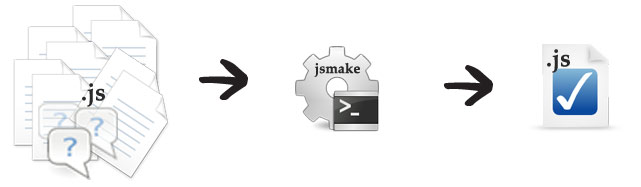

jsmake
manage,compress & merge your javascript files
What is jsmake ?
jsmake is a preprocessor developped for javascript.
It will help you managing your files,creating different build and debugging your script.
What's inside:
- Managing tool: Merge several javascript files that require each other (package like)
- Build tool: Create different build (debug, strict,ie,mobile) by using the directives ifdef,ifndef and many others!
- Compressor tool: Specify a compression level. One is not enough. Choose within 3 different flavors.
- Debugging tool: Name your anonymous functions and track your errors... Or get rid of them and go live!
To make a long story short...
- multiple raw interdependant javascript files
- get merged,parsed & compressed
- into a clean & lightweight file